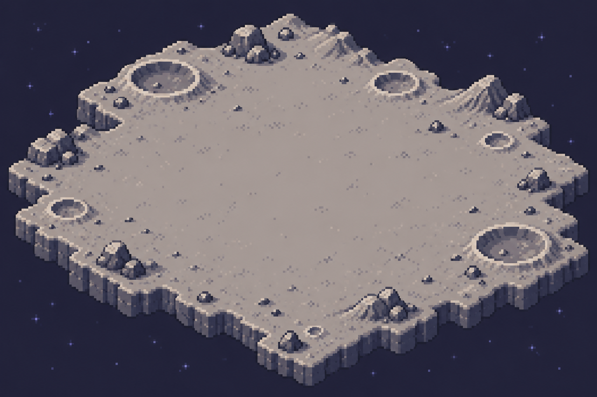
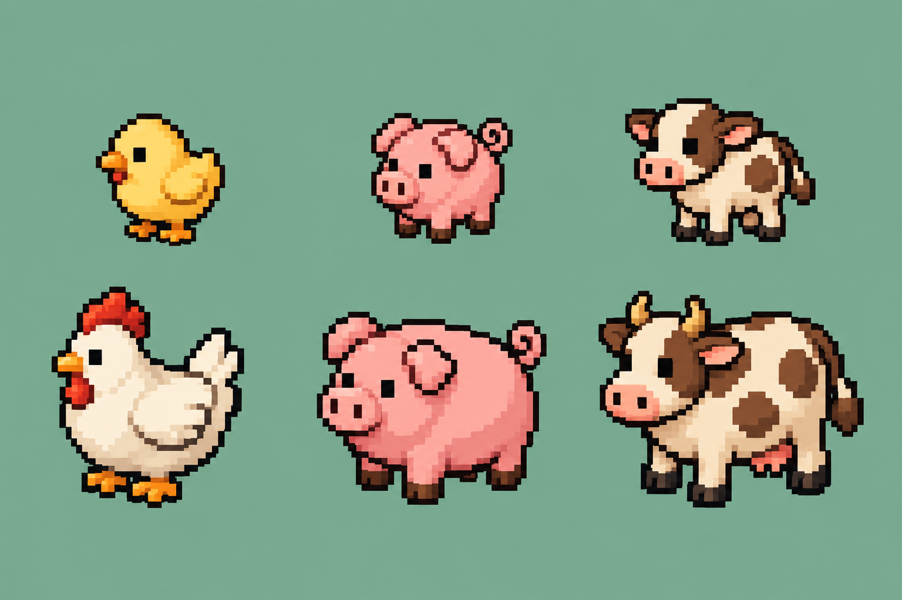
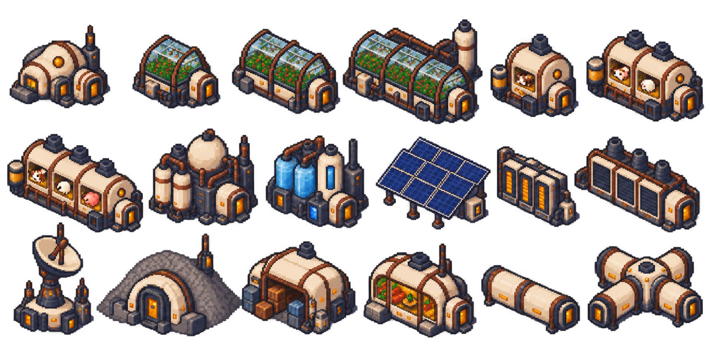
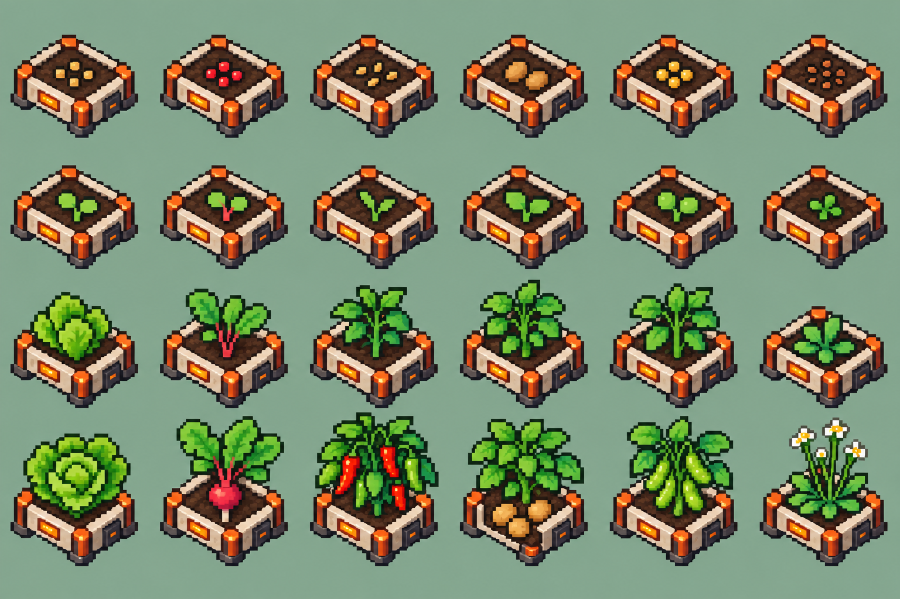
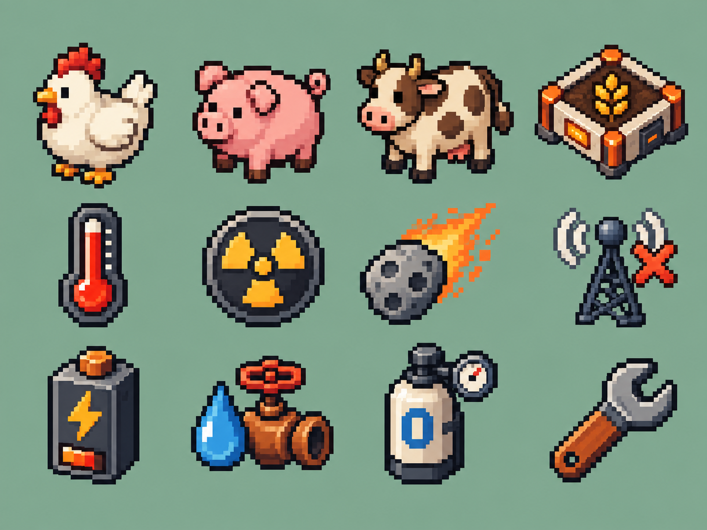

LUNAR AGRICULTURE / ART STUDY
基础月面背景
固定 2.5D 视角 · 中央留白用于基地搭建 · 陨石坑与岩石位于外围

- 灰紫月壤 / 暗色背景
- 统一左上方光照
- 不含建筑、走廊或网格
LUNAR AGRICULTURE / ART STUDY
畜牧 · 幼体与成体
从左到右：鸡、猪、牛；上排幼体，下排成体。统一光照与 2.5D 朝向。

- 雏鸡
- 仔猪
- 牛犊
- 成鸡
- 成猪
- 成牛
LUNAR AGRICULTURE / ART STUDY
建筑与连接件
18 个元素 · 保持屋顶、两侧墙面、入口与舱段体积

- 居住核心
- 温室 · 紧凑
- 温室 · 标准
- 温室 · 工业
- 畜牧 · 紧凑
- 畜牧 · 标准
- 畜牧 · 工业
- 制氧
- 水循环
- 太阳能
- 电池
- 热控 / 工具舱
- 通信塔
- 避难所
- 仓储
- 休闲舱
- 走廊
- 四通连接
LUNAR AGRICULTURE / ART STUDY
六作物 · 四个阶段
从上到下：播种 → 幼苗 → 生长 → 收获就绪；拟南芥为样本就绪

- 生菜
- 萝卜
- 辣椒
- 土豆
- 大豆
- 拟南芥
LUNAR AGRICULTURE / ART STUDY
动物与系统图标
更大的色块、简化明暗、清楚的深色轮廓

- 鸡
- 猪
- 牛
- 食物
- 温度
- 辐射
- 撞击
- 通信
- 电力
- 水
- 氧气
- 维修